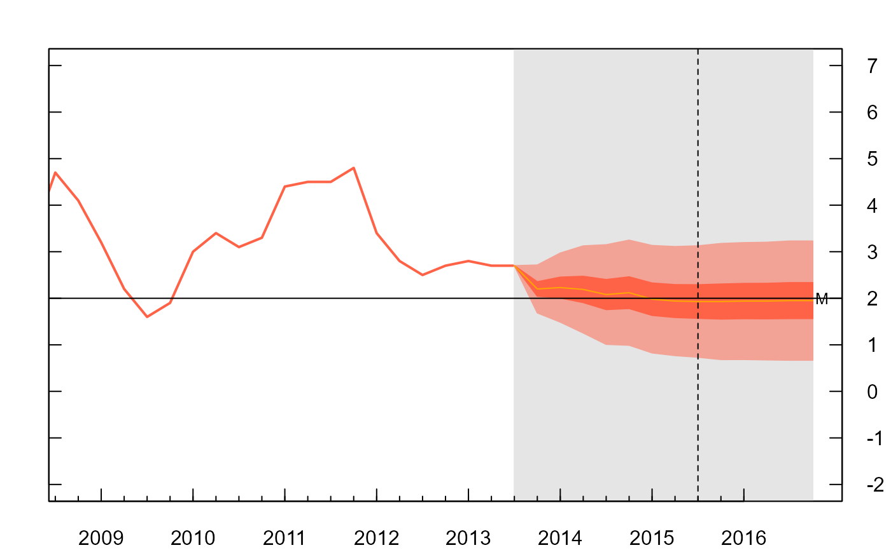

boe.RdNumerical parameters for inflation report of the Bank of England used to specify the probability distributions for forecast charts of CPI inflation. Data formatted from the November 2013 Bank of England Inflation Report.
data(boe)A data frame with 512 observations on the following 5 variables.
time0Publication time of parameters
timeFuture time of projected parameter
modeCentral location parameter of split-normal distribution
uncertaintyUncertainty parameter of split-normal distribution
skewSkew parameter of split-normal distribution
mode, uncertainty and skew parameters relate to those given in dsplitnorm, where uncertainty is the standard deviation.
Bank of England Inflation Report November 2013. Retrieved from "Parameters for MPC CPI Inflation Projections from February 2004" spreadsheet at:
Can not find copy of speadheet on the Bank of England website anymore, but there is a copy at https://github.com/guyabel/fanplot/tree/master/data-raw/
##
##Q1 2013
##
#extract data for Q1 2013
y0 <- 2013
boe0<-subset(boe, time0==y0)
k <- nrow(boe0)
#guess work to set percentiles the boe are plotting
p <- seq(0.05, 0.95, 0.05)
p <- c(0.01, p, 0.99)
#estimate percentiles for future time period
pp <- matrix(NA, nrow = length(p), ncol = k)
for (i in 1:k)
pp[, i] <- qsplitnorm(p, mode = boe0$mode[i], sd = boe0$uncertainty[i], skew = boe0$skew[i])
pp
#> [,1] [,2] [,3] [,4] [,5] [,6] [,7]
#> [1,] 1.310928 0.8728139 0.6377539 0.1755382 -0.1673062 -0.3670966 -0.7036235
#> [2,] 1.726639 1.4725288 1.3942125 1.0410359 0.7458961 0.5665505 0.2436535
#> [3,] 1.948254 1.7922346 1.7974778 1.5024295 1.2327209 1.0642744 0.7486433
#> [4,] 2.097776 2.0079386 2.0695589 1.8137296 1.5611793 1.4000863 1.0893576
#> [5,] 2.216611 2.1793733 2.2858004 2.0611410 1.8222275 1.6669789 1.3601465
#> [6,] 2.318561 2.3264490 2.4713164 2.2733980 2.0461837 1.8959490 1.5924592
#> [7,] 2.410116 2.4585275 2.6379154 2.4640113 2.2473033 2.1015713 1.8010833
#> [8,] 2.494955 2.5809180 2.7922943 2.6406430 2.4336706 2.2921110 1.9944046
#> [9,] 2.575458 2.6970545 2.9387847 2.8082492 2.6105149 2.4729145 2.1778475
#> [10,] 2.653347 2.8094180 3.0805159 2.9704101 2.7816138 2.6478440 2.3553307
#> [11,] 2.730000 2.9200000 3.2200000 3.1300000 2.9500000 2.8200000 2.5300000
#> [12,] 2.806653 3.0305820 3.3594841 3.2895899 3.1183862 2.9921560 2.7046693
#> [13,] 2.884542 3.1429455 3.5012153 3.4517508 3.2894851 3.1670855 2.8821525
#> [14,] 2.965045 3.2590820 3.6477057 3.6193570 3.4663294 3.3478890 3.0655954
#> [15,] 3.049884 3.3814725 3.8020846 3.7959887 3.6526967 3.5384287 3.2589167
#> [16,] 3.141439 3.5135510 3.9686836 3.9866020 3.8538163 3.7440510 3.4675408
#> [17,] 3.243389 3.6606267 4.1541996 4.1988590 4.0777725 3.9730211 3.6998535
#> [18,] 3.362224 3.8320614 4.3704411 4.4462704 4.3388207 4.2399137 3.9706424
#> [19,] 3.511746 4.0477654 4.6425222 4.7575705 4.6672791 4.5757256 4.3113567
#> [20,] 3.733361 4.3674712 5.0457875 5.2189641 5.1541039 5.0734495 4.8163465
#> [21,] 4.149072 4.9671861 5.8022461 6.0844618 6.0673062 6.0070966 5.7636235
#> [,8] [,9] [,10] [,11] [,12] [,13]
#> [1,] -0.89341398 -1.1229949 -1.2362583 -1.3595218 -1.52604877 -1.57604877
#> [2,] 0.07430785 -0.1143834 -0.2208319 -0.3372804 -0.49017751 -0.54017751
#> [3,] 0.59019678 0.4233037 0.3204882 0.2076727 0.06204162 0.01204162
#> [4,] 0.93826459 0.7860786 0.6857142 0.5753499 0.43462125 0.38462125
#> [5,] 1.21489785 1.0744006 0.9759844 0.8675681 0.73073572 0.68073572
#> [6,] 1.45222455 1.3217552 1.2250103 1.1182654 0.98477558 0.93477558
#> [7,] 1.66535127 1.5438872 1.4486432 1.3433992 1.21291122 1.16291122
#> [8,] 1.86284494 1.7497257 1.6558725 1.5520193 1.42431289 1.37431289
#> [9,] 2.05024711 1.9450463 1.8525128 1.7499793 1.62491240 1.57491240
#> [10,] 2.23156089 2.1340212 2.0427646 1.9415080 1.81899475 1.76899475
#> [11,] 2.41000000 2.3200000 2.2300000 2.1300000 2.01000000 1.96000000
#> [12,] 2.58843911 2.5059788 2.4172354 2.3184920 2.20100525 2.15100525
#> [13,] 2.76975289 2.6949537 2.6074872 2.5100207 2.39508760 2.34508760
#> [14,] 2.95715506 2.8902743 2.8041275 2.7079807 2.59568711 2.54568711
#> [15,] 3.15464873 3.0961128 3.0113568 2.9166008 2.80708878 2.75708878
#> [16,] 3.36777545 3.3182448 3.2349897 3.1417346 3.03522442 2.98522442
#> [17,] 3.60510215 3.5655994 3.4840156 3.3924319 3.28926428 3.23926428
#> [18,] 3.88173541 3.8539214 3.7742858 3.6846501 3.58537875 3.53537875
#> [19,] 4.22980322 4.2166963 4.1395118 4.0523273 3.95795838 3.90795838
#> [20,] 4.74569215 4.7543834 4.6808319 4.5972804 4.51017751 4.46017751
#> [21,] 5.71341398 5.7629949 5.6962583 5.6195218 5.54604877 5.49604877
#plot cpi
par(mar=rep(2,4))
plot(cpi, type = "l", xlim = floor(c(y0-5, y0+3)), ylim = c(-2, 7), las = 1,
col="tomato", lwd=2, xaxt = "n", yaxt = "n")
#backround
rect(y0-0.25, par("usr")[3] - 1, y0+3, par("usr")[4] + 1, border = "gray90", col = "gray90")
#fan
pal <- colorRampPalette(c("tomato", "gray90"))
fan(data=pp, probs=p, sim.data=FALSE, start=y0, frequency=4,
anchor=cpi[time(cpi)==y0-0.25], fan.col=pal, ln=NULL, rlab=FALSE)
#> [1] "some right labels not plotted as conflict with precentiles given in probs"
#aesthetics for boe axis
axis(2, at = -2:7, las = 2, tcl = 0.5, labels = FALSE)
axis(4, at = -2:7, las = 2, tcl = 0.5)
axis(1, at = 2008:2016, tcl = 0.5)
axis(1, at = seq(2008, 2016, 0.25), labels = FALSE, tcl = 0.2)
abline(h = 2) #cpi target
abline(v = y0 + 1.75, lty = 2) #2 year line
##
##Q4 2013 (coarser fan)
##
#extract data for Q4 2013
y0 <- 2013.75
boe0<-subset(boe, time0==y0)
k <- nrow(boe0)
#guess work at which percentiles the boe are plotting
p <- seq(0.2, 0.8, 0.2)
p <- c(0.05, p, 0.95)
pp <- matrix(NA, nrow = length(p), ncol = k)
for (i in 1:k)
pp[, i] <- qsplitnorm(p, mode = boe0$mode[i], sd = boe0$uncertainty[i], skew = boe0$skew[i])
pp
#> [,1] [,2] [,3] [,4] [,5] [,6]
#> [1,] 1.196639 0.7825288 0.3642125 -0.008964106 -0.08410386 -0.2734495
#> [2,] 1.686611 1.4893733 1.2558004 1.011141033 0.99222755 0.8269789
#> [3,] 2.045458 2.0070545 1.9087847 1.758249179 1.78051488 1.6329145
#> [4,] 2.354542 2.4529455 2.4712153 2.401750821 2.45948512 2.3270855
#> [5,] 2.713389 2.9706267 3.1241996 3.148858967 3.24777245 3.1330211
#> [6,] 3.203361 3.6774712 4.0157875 4.168964106 4.32410386 4.2334495
#> [,7] [,8] [,9] [,10] [,11] [,12]
#> [1,] -0.3463465 -0.4056922 -0.5043834 -0.5108319 -0.5272804 -0.5501775
#> [2,] 0.7701465 0.7348978 0.6844006 0.6859844 0.6775681 0.6707357
#> [3,] 1.5878475 1.5702471 1.5550463 1.5625128 1.5599793 1.5649124
#> [4,] 2.2921525 2.2897529 2.3049537 2.3174872 2.3200207 2.3350876
#> [5,] 3.1098535 3.1251022 3.1755994 3.1940156 3.2024319 3.2292643
#> [6,] 4.2263465 4.2656922 4.3643834 4.3908319 4.4072804 4.4501775
#> [,13]
#> [1,] -0.5501775
#> [2,] 0.6707357
#> [3,] 1.5649124
#> [4,] 2.3350876
#> [5,] 3.2292643
#> [6,] 4.4501775
#define prediction intervals for labels
p.int<-p[4:6]-p[3:1]
p.int
#> [1] 0.2 0.6 0.9
#plot cpi
par(mar=rep(2,4))
plot(cpi, type = "l", xlim = c(y0-5, y0+3), ylim = c(-2, 7), las = 1,
col="tomato", lwd=2, xaxt = "n", yaxt = "n")
#backround
rect(y0-0.25, par("usr")[3] - 1, y0+3, par("usr")[4] + 1, border = "gray90", col = "gray90")
# add fan
pal <- colorRampPalette(c("tomato", "gray90"))
fan(data=pp, probs=p.int, sim.data=FALSE, start=y0, frequency=4,
anchor=cpi[time(cpi)==y0-0.25], fan.col=pal, ln=NULL, rlab=pi, nfan=4, type="interval")
#> [1] "some right labels not plotted as conflict with precentiles given in probs"
#aesthetics for boe axis
axis(2, at = -2:7, las = 2, tcl = 0.5, labels = FALSE)
axis(4, at = -2:7, las = 2, tcl = 0.5)
axis(1, at = 2008:2016, tcl = 0.5)
axis(1, at = seq(2008, 2016, 0.25), labels = FALSE, tcl = 0.2)
abline(h = 2) #cpi target
abline(v = y0 + 1.75, lty = 2) #2 year line
